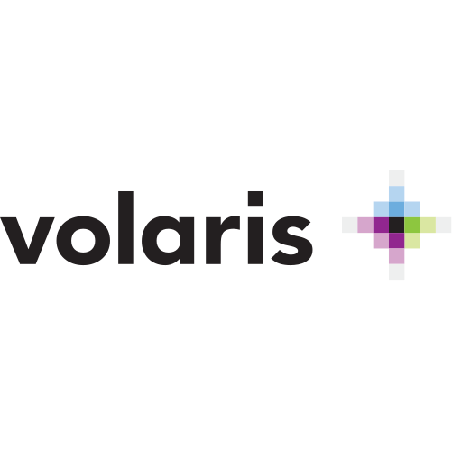

Artificial Intelligence
Colors
52 values · 10 neutrals + 6 ramps of 7 · every main is the 400Replaces every previous color definition. Figures under each chip are WCAG 2.1 contrast against Applaudo White #F7F7F7 · Applaudo Black #121212. The 400 of every ramp is outlined. The token number does not predict contrast — step 400 runs from okL 0.588 (purple, blue) to 0.828 (yellow), so never assume two tokens with the same number behave alike.
Surfaces & semantic aliases
--color-surface
--color-surface-lift
--color-surface-invert
--color-text
--color-text-muted
--color-text-muted-on-dark
--color-brand
--line
neutral-50Applaudo White
#F7F7F7
1.00 · 17.49
neutral-100
#DEDEDE
1.26 · 13.92
neutral-200
#C4C4C4
1.63 · 10.74
neutral-300text on dark
#ABABAB
2.14 · 8.16
neutral-400
#919191
2.94 · 5.94
neutral-500
#787878
4.12 · 4.24
neutral-600text on light
#5E5E5E
6.05 · 2.89
neutral-700
#454545
8.95 · 1.95
neutral-800
#2B2B2B
13.22 · 1.32
neutral-900Applaudo Black
#121212
17.49 · 1.00
No single gray passes AA on both grounds — neutral-500 gives 4.12 / 4.24 and clears neither. Storm Gray #535862 from the old system is retired; neutral-600 replaces it.
Red — brand primary · Digital Transformation
red-100
#FFEFEF
1.04 · 16.81
red-200
#FFC8C8
1.37 · 12.80
red-300text on dark
#FF8D8D
2.08 · 8.43
red-400main
#FF4040
3.24 · 5.41
red-500text on light
#A12828
6.88 · 2.54
red-600
#751D1D
10.05 · 1.74
red-700
#521414
13.34 · 1.31
purple-100
#F7F0FD
1.04 · 16.80
purple-200
#E4C8F9
1.41 · 12.43
purple-300text on dark
#C68EF3
2.29 · 7.64
purple-400main
#A044E8
4.37 · 4.00
purple-500text on light
#652A93
8.50 · 2.06
purple-600
#491E6A
11.69 · 1.50
purple-700
#33154B
14.52 · 1.20
orange-100
#FFF5EE
1.00 · 17.44
orange-200
#FFDDC4
1.20 · 14.62
orange-300text on dark
#FFB885
1.57 · 11.10
orange-400main
#FF8833
2.22 · 7.87
orange-500text on light
#A15520
5.11 · 3.42
orange-600
#753D17
8.05 · 2.17
orange-700
#522B10
11.45 · 1.53
yellow-100
#FFF9EC
1.02 · 17.85
yellow-200
#FFEBBB
1.10 · 15.93
yellow-300text on dark
#FFD771
1.29 · 13.57
yellow-400main
#FCBA14
1.61 · 10.86
yellow-500
#9F750D
3.90 · 4.48
yellow-600text on light
#74550A
6.43 · 2.72
yellow-700
#513B08
9.91 · 1.77
blue-100
#EFF3FF
1.04 · 16.89
blue-200
#C8D5FF
1.36 · 12.86
blue-300text on dark
#8DA7FF
2.15 · 8.12
blue-400main
#406CFF
4.08 · 4.29
blue-500text on light
#2844A1
8.06 · 2.17
blue-600
#1D3075
11.32 · 1.54
blue-700
#142152
14.32 · 1.22
green-100
#EDFAF1
1.00 · 17.44
green-200
#BEF0CF
1.18 · 14.77
green-300text on dark
#79E09B
1.51 · 11.55
green-400main
#21C759
2.09 · 8.37
green-500text on light
#157D38
4.87 · 3.59
green-600
#0F5B28
7.70 · 2.27
green-700
#0B401B
11.12 · 1.57
Colored text on light: step
500 — except yellow, which uses 600 (yellow-500 gives 3.90 and misses AA).Colored text on dark: step
300. The 400 of purple (4.00) and blue (4.29) fall short of AA on Applaudo Black.On a main color: Applaudo Black
#121212 works on all four portfolio colors, floor 4.00 — the only rule with no exception. Yellow does not carry white (1.73).Surface vs type: the
400 of orange, yellow and green are field colors, not ink — 1.61 to 2.22 on Applaudo White.Never encode state by color alone: green-400 ↔ red-400 are identical under deuteranopia (0.045); blue-400 ↔ purple-400 under protanopia (0.044).
Purple ↔ Blue sit at okL 0.588 exactly, OKLab distance 0.155 — the closest pair, and it crosses categories. In chips or badges separate them with more than color.
Digital Transformation
Knewton Ecosystem
Partner Products
Live Systems
Portfolio colors live on portfolio surfaces: service pages, proposal decks, architecture diagrams. The corporate brand stays Applaudo Red on neutral. Orange and Yellow are the tightest pair (0.121) — Partner Products and Live Systems each need their own icon and label wherever they appear as a small chip.
Typography
Single family: Avenir Next · two weights only: 400 and 600Applaudo.
Big section heading
Standard section heading
Case study headline
Card heading text
All explanatory copy. Maximum line length 65–75ch enforced by container. This is what most paragraph text looks like in practice.
Compact body for dense contexts — captions, card sublines, taglines.
Nav links, button labels
Eyebrow kicker · label
Spacing & Geometry
Named scale · section container min(1180px, 100%)
xs · 8px
sm · 16px
md · 22px
lg · 38px
xl · 54px
pill · 999px
--radius-xl · 32px
--radius · 32px
--radius-sm · 18px
--radius-xs · 6px
--radius-xl (32px): outer shell of nested card structures — a card that contains inner framed elements. e.g.
.hero-photo-card.--radius (32px): standalone card surfaces — any card that stands alone without a nested inner frame. e.g.
.solve-item, .industry-stage-copy. Same value as --radius-xl; the distinction is context, not size.--radius-sm (18px): inner frames and small interactive elements — icon boxes, chips, nav items, mega-menu links. e.g.
.solve-panel-icon, .ai-spark-chip.--radius-xs (6px): pills, tags, and inline labels. e.g.
.case-pill, code snippets.Shared grid-template tokens keep every "heading | body" and "label | panel" section aligned to the same column widths across pages.
--section-header-cols · ~42% / ~58% · gap clamp(40px, 6vw, 96px)
heading 0.42fr
body 0.58fr
--section-panel-cols · 0.4fr / 1fr · gap clamp(32px, 5vw, 72px) · partner detail pages
label 0.4fr
content panel 1fr
Some layout variables are scoped to a specific section rather than placed in :root. They follow the same naming convention but only apply inside their component.
--solve-col-gap · clamp(22px, 3vw, 38px) · scoped to .section.solve-section
gap
mobile
≤ 640px
tablet / nav collapse
≤ 980px
desktop
≥ 981px
wide · section container
1180px
Elevation
Ambient shadows only · no shadow at rest on interactive elements
Ambient Lift · --shadow (rest)
0 28px 70px rgba(18,18,18,0.08)
0 8px 24px rgba(18,18,18,0.04)
0 8px 24px rgba(18,18,18,0.04)
Deep Hover (hover state)
0 34px 90px rgba(18,18,18,0.13)
Header Float (nav bar)
0 18px 48px rgba(18,18,18,0.08)
Button Hover Depth
inset 0 1px 0 rgba(255,255,255,0.18)
0 14px 30px rgba(18,18,18,0.18)
0 14px 30px rgba(18,18,18,0.18)
Motion
Ease-out only · no bouncing · animate transform + opacity only
TokenValueUse
Exit Ease
cubic-bezier(0.22, 1, 0.36, 1)
UI transitions, menu opens, card hovers, button lifts
State Ease
ease
Short color/opacity/background state changes
Fast · 160ms
160ms ease
Color, border transitions
Standard · 220ms
220ms cubic-bezier(0.22,1,0.36,1)
Card hover, menu item transitions
Button · 260ms
260ms cubic-bezier(0.22,1,0.36,1)
Button transform and box-shadow
Reveal · 560ms
560ms cubic-bezier(0.22,1,0.36,1)
Scroll-triggered entrance animations (.reveal)
Stat count-up
requestAnimationFrame
Numbers in .stats-row count from 0 when .focus-section enters view
Buttons
.button · two variants + size modifier · glint effects active on hover
.button.button-black (Primary)
Talk to an AI engineer
.button.button-white (Secondary)
See AI we've built
.button.button-black.button-small (nav CTA)
Talk to an AI engineer
On dark background (glint contrast)
.button.button-black
Talk to an AI engineer
.button.button-white
See AI we've built
.button-row (default: flex-start)
.button-row.centered
Two-Button Rule: exactly one
.button-black (the action) + one .button-white (the deferral). Never two primaries; never a solo primary.Glint: both variants use
::before/::after driven by --shine-x/--shine-y — preserve them when copying button markup.Navigation Bar
.site-header · fixed glass pill · injected from components/nav.htmlThe live nav is fetched from components/nav.html and injected into <div id="site-nav"> by script.js, which also wires the hover/click mega-menus (.nav-item.has-mega → .is-hovered / .is-open). Below is a static reference of the current seven-item structure.
Mega-menu variants:
.industries-menu (prominent + secondary), .services-list-menu (8 services), .compact-menu (Partners, Insights, About), .two-col-menu (Work).Collapse: below 980px the nav collapses to
.menu-button; body.menu-open opens the full-screen overlay and locks scroll.Labels & Tags
.eyebrow · .tagline · .case-pill · .ai-spark-chip
.eyebrow (section kicker)
AI Engineering
.section-kicker (logo-cloud lead-in)
Building AI for enterprise leaders.
.tagline (card label)
Retail · ML Ops
.case-pills + .case-pill
Retail & Consumer
Data Platforms
.story-card-badge
Artificial Intelligence
.ai-spark-chip
Glass Card
.glass-card · pointer-reactive red shine · backdrop-filterMove your cursor over the cards. The red radial highlight follows the pointer via --shine-x / --shine-y set by script.js.
Strategy
Enterprise AI foundations that scale
From architecture review to production deployment.
Build
Production AI, shipped on time
800+ engineers across 27 countries.
Operate
AI that stays in production
Runbooks, retraining, and monitoring in place.
Background:
linear-gradient(145deg, rgba(255,255,255,0.82), rgba(255,255,255,0.46)) + radial shine at --shine-x/--shine-yBorder:
1px solid rgba(255,255,255,0.76) · Backdrop: blur(24px) saturate(1.4)Shadow: Ambient Lift at rest · Deep Hover +
translateY(-4px) on hoverCase Card
.case-grid · .case-card-feature + .case-aside > .case-card-hAsymmetric work grid: one feature card beside a stacked .case-aside of two horizontal .case-card-h. Each card pairs a .tagline, .case-pills, an h3, and a .case-cta affordance.
Visual helpers:
.visual-retail, .visual-sports, .visual-travel, .visual-work-cloud, .visual-work-ai, .visual-work-salesforce — each sets a full-bleed image + dark gradient on .case-visual.Story Card
.story-card · work library grid item · image + badge + title + ctaThe repeating unit of the customer-stories library. Image comes from the --story-image custom property on .story-card-media; data-industries / data-services drive filtering (see Story Browser).
Industry Tile
.industry-tile-grid > .industry-tile.industry-visual-* · hover liftImage is set by a .industry-visual-* helper class (no inline URLs) so all pages share the same imagery.
Retail & Consumer
Demand · Content · Commerce
Travel & HospitalityBooking · Loyalty · Guest ops
Sports, Media & EntertainmentVenue · Broadcast · Fan data
Financial ServicesRisk · Fraud · Compliance
TechnologyPlatform · DevEx · Scale
HealthcareClinical · Imaging · Patient ops
Helpers:
industry-visual-retail · -travel · -sports · -finance · -healthcare · -technology · -manufacturingIndustry Panel
.industry-panel-row > .industry-panel · hover-reveal copy + client logosThe primary industries grid on the Industries page. At rest each panel shows only its icon + name; on hover the .industry-panel-reveal expands to show the tagline, client logos, and a .industry-card-cta.
Financial Services
Underwriting, fraud detection, and compliance, automated through AI.


Retail & Consumer
Forecasting demand, personalizing the shopping experience, and scaling content with AI.


Travel & Hospitality
Powering booking, loyalty, and guest experience with AI engineering.


Industry Row
.industry-row-list > .industry-row · secondary industries listCompact list rows for secondary industries — icon + name, subline, and a hover arrow.
Engagement Card
.engagement-grid > .engagement-card · numbered entry pointsNext-Step Card
.next-step-grid > .next-step-card · icon + title + copy + ctaReason Item
.reasons-system > .reason-visual + .reason-stack > .reason-itemNumbered argument stack paired with a layered .reason-visual on the home page.
We start with your data.
The model is the easy part. The work is everything around it: your data, your evaluation criteria, and the failure modes that matter most.
We stay through year three.
Every system ships with the runbook, the retraining pipeline, and the dashboard your team will run it from.
We tell you what we'd build first.
Sometimes that means waiting. Always it means the honest read, on the first call, before the proposal.
Solve Module
.solve-module · tabbed list + panel · equal 50/50 columns · [data-solve]
Two-column tabbed interface. Left column: .solve-list of
.solve-item tab buttons. Right column:
.solve-panels showing the active
.solve-panel. Wired by script.js via
[data-solve], data-solve-item,
and data-solve-panel attributes.
Grid areas: "label ." / "list panel" / ". cta".
In practice, this looks like
AI product strategy
We define which problems AI can solve in your business, in what order, with what data. You get a build sequence and a decision framework, not a roadmap deck.
Orchestration & intelligent systems deployment
We wire agents, models, and tools into production workflows. Multi-step reasoning, tool-use, retrieval, and safety layers all in place before we hand over the keys.
Security, governance & compliance
Enterprise AI needs guardrails before it ships: data access controls, audit trails, bias testing, and the regulatory review your legal team will ask for.
Grid:
repeat(2, minmax(0, 1fr)) — equal 50/50 columns with grid-template-areas: "label ." / "list panel" / ". cta"Column gap:
--solve-col-gap: clamp(22px, 3vw, 38px) · row-gap: 16pxPadding tokens:
--solve-card-pad: 22px on .solve-item · --solve-panel-pad: clamp(28px, 3.2vw, 38px) on .solve-panelBorder-radius:
.solve-item uses var(--radius) (standalone card, 32px) — not --radius-smReveal:
.solve-section.is-visible .solve-item stagger: item 2 +80ms, item 3 +160msResponsive: stacks to single column at ≤ 980px (tablet). Panel moves below list.
Outcome Picker
.compose-picker · glass-card, icon tabs + crossfading art + ledger list · [data-compose]
Archived from the landing page (previously its "Composed around you" section) when that section was
cut from the live page — parked here, not deleted, for future reuse.
A .glass-card holding an icon-tab list on the left, a full-bleed
photo on the right that cross-fades and masks into the card, and a .reason-item-style
ledger list that highlights in sync with the active tab. Wired by script.js via
[data-compose], data-compose-tab,
data-compose-art, and data-compose-panel.
The tab body needs its own position: relative — with z-index: auto on both it and
the art layer, DOM order alone decides which one paints on top, and the body must come second.
Any of the four portfolios can lead here. Most engagements start in Agentic Engineering for the Enterprise.
Portfolios in play
- 01Agentic Engineering for the Enterprise15 products
- 02Knewton Ecosystem4 product lines
- 03Partner Platforms3 platforms, 5 modes
- 04Managed Operations and Cybersecurity5 capability groups
Any of the four portfolios can lead here. Most engagements pair Agentic Engineering with Partner Platforms.
Portfolios in play
- 01Agentic Engineering for the Enterprise15 products
- 02Knewton Ecosystem4 product lines
- 03Partner Platforms3 platforms, 5 modes
- 04Managed Operations and Cybersecurity5 capability groups
Any of the four portfolios can lead here. Most engagements pair agentic systems with the Knewton Ecosystem.
Portfolios in play
- 01Agentic Engineering for the Enterprise15 products
- 02Knewton Ecosystem4 product lines
- 03Partner Platforms3 platforms, 5 modes
- 04Managed Operations and Cybersecurity5 capability groups
Managed Operations and Cybersecurity leads here. The other three portfolios compose in as the work requires.
Portfolios in play
- 01Agentic Engineering for the Enterprise15 products
- 02Knewton Ecosystem4 product lines
- 03Partner Platforms3 platforms, 5 modes
- 04Managed Operations and Cybersecurity5 capability groups
Container:
.glass-card reused as-is for the shine and blur — the pointer-tracked bloom comes free from script.js's shared --shine-x/--shine-y selector list.Art layer: absolute,
inset-block: 0; right: 0; width: 58%, masked linear-gradient(to right, transparent, black 70%) so it dissolves into the card rather than cutting hard against the text. Hidden below 980px.Tab pill (active): frosted glass —
background: rgba(255,255,255,.65), backdrop-filter: blur(20px) saturate(1.35), hairline border, inner top highlight — reads as glass whether it sits over white or photograph.List rows: inactive rows sit at
opacity: .38 with an 2px downward offset; the active row's index numeral switches to --red-500. Numbers here don't count portfolios in order — they flag which ones are in play for the selected outcome.Responsive: below 980px the art layer is hidden entirely rather than reflowed — there is no good stacked treatment for a bleeding photo, so the card degrades to text-only.
Stats Row
.focus-layout > .stats-intro + .stats-row · count-up via data-stat-valueNumbers count up from zero (data-stat-value + optional data-stat-suffix) the first time the parent .focus-section scrolls into view. Each cell pairs a RemixIcon, the figure, and a label. Responsive: 4-col desktop → 2-col at ≤ 980px → 1-col at ≤ 640px.
Built to keep building.
What we are today, and what we're scaling next.
800+engineers
27countries
12+years in production
90%client retention
Testimonials
.testimonial-stack · stacked-card carousel · prev / next / dotsStacked-card carousel wired by script.js ([data-testimonial-stack]). Use the arrows or dots to cycle; cards carry a data-pos that the script rotates.
Applaudo has integrated well with the internal team. Their frontend expertise and UI capabilities have been a valuable asset.
They've essentially become an extended arm of our development team. Their proactive approach makes them a valuable partner.
Applaudo takes pride in their work and goes above and beyond. They have gone the extra mile to exceed our needs.
Applaudo produced streamlined deliverables. Their team has impressive Cloud and solution hygiene.
From kickoff to go-live, the communication was exceptional. They became a true extension of our engineering team.
Story Browser
.story-layout · faceted filter sidebar + search + pagination (live)Fully interactive (wired by script.js): multi-select Industry / Service accordion facets, live text search, a "clear all" reset, and pagination at 8 cards per page. Try the checkboxes and search below.
Artificial Intelligence
Optimizing Inventory with AI, Cloud, and Predictive Analytics
Read the Story
Data
Transforming Arena Operations Systems with Data and Design
Read the Story
Cloud
Shaping a Nation's Digital Transformation with Cloud
Read the Story
Cloud
Optimizing Airlines Operations with Cloud
Read the Story
Cloud
Revolutionizing Financial Reporting with Development and Cloud
Read the Story
Artificial Intelligence
Automating Legal Document Processing with Cloud
Read the Story
Artificial Intelligence
Promoting Efficiency with Data
Read the Story
Data
Enhancing Game Strategy with Data
Read the Story
Development
Enhancing Aircraft Material Sales Through Development
Read the Story
Cloud
Optimizing National Map Services with Cloud
Read the StoryNo customer stories match your filters.
Logo Cloud
.trust-section · .section-kicker + .logo-cloud > figure > imgBuilding AI for enterprise leaders across the Americas.





Recognition
.recognition-layout · .award-feature + .partner-badge-grid
Google Cloud Partner of the Year 2026
Public Sector LATAM
Partners that trust us


Section System
.section > .section-inner · plus heading patternsEvery page block is a .section (relative, overflow-hidden, padding: clamp(72px, 8vw, 108px) 24px — mobile ≤640px: 54px 18px) wrapping a .section-inner container (min(1180px, 100%), centered). Add .narrow for centered 930px CTA blocks. Alternating backgrounds are driven by .section:nth-of-type(even). Sections with fixed backgrounds are pinned via two-class selectors (e.g. .section.solve-section — specificity 0,2,0) so inserting or reordering sections doesn't break parity. Below are the four standard heading openers.
.section-heading — stacked heading + ledeFeatured Stories
How our teams drive innovation, solve complex challenges, and deliver impact at scale.
A different kind of AI partner.
Three things we do, every engagement.
Why us.
We ship AI in production for the largest enterprises in the Americas.
Our Customer Stories.
Filter by industry and service, or search the full library.
Our approach
Three ways in.
Strategy, Build, and Operate: each engagement starts where you are and scales with your ambition.
Hero
.hero.section · .hero-inner > .hero-copy + .hero-photo-systemHome hero: copy block beside the photo system (main photo + two glass info cards + a glass accent). The background carries a faint pointer-reactive glow driven by --mx / --my.
AI ENGINEERING FOR ENTERPRISE
AI Engineered to Transform
We build AI systems for the largest companies in the Americas. The kind that has to work on Monday morning, in front of real users, at the scale the business actually runs at.
Past launch
Runbooks, retraining, dashboards, and the next version in view.
With your team
Data, product, cloud, security, and AI engineering in one room.
AI Stack
.ai-stack-section · looping video bg + copy + partner logosFull-bleed section with a looping glass video behind the copy and an "inside our stack" model-partner logo panel. On the home page the video also scrubs with pointer position.
AI is in the way we engineer. The way we test. The way we ship. The way we operate.
Not on top of our work. Inside it. From the first architecture decision to the last production runbook.
Inside our stack
Value Prop
.value-prop-section · .value-prop-shell > heading + body + CTAAI-native delivery
The AI partner that engineers the full enterprise stack.
We build across every layer: the application, the data that feeds it, the cloud it runs on, and the operating model your team runs it from. That's how AI reaches production and stays there.
CTA Section
.final-cta / .services-final-cta · .section-inner.narrow · Two-Button RuleThe first conversation isn't a scoping call.
It's an honest exchange about where AI is going in your industry, what you should build now, what you should wait on, and whether we're the right people to build it with you.
Variant with .ai-spark-chip opener (Services / Industries pages use .services-final-cta):
Talk to an AI engineer.
Scroll Reveal
.reveal → .is-visible via IntersectionObserver (threshold 0.16) · one-timeAdd .reveal to any section or container. script.js observes it and adds .is-visible when it enters the viewport, then disconnects (no re-trigger on scroll-up). A .focus-section also kicks off the stat count-up at the same moment.
Hidden state (.reveal)
.reveal {
opacity: 0;
transform: translateY(20px);
transition:
opacity 560ms cubic-bezier(0.22,1,0.36,1),
transform 560ms cubic-bezier(0.22,1,0.36,1);
}
Visible state (.reveal.is-visible)
.reveal.is-visible {
opacity: 1;
transform: none;
}
/* Observer disconnects after firing.
No re-trigger on scroll-up. */
Live demo — these cards start visible in the gallery; on a real page they'd enter hidden and reveal on scroll:
Card 1
Revealed on scroll
Card 2
Staggered delay
Card 3